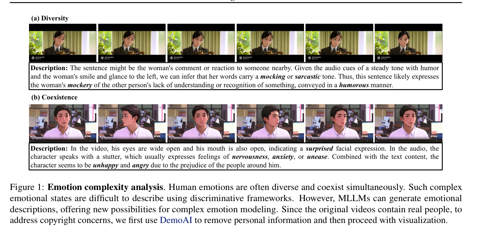
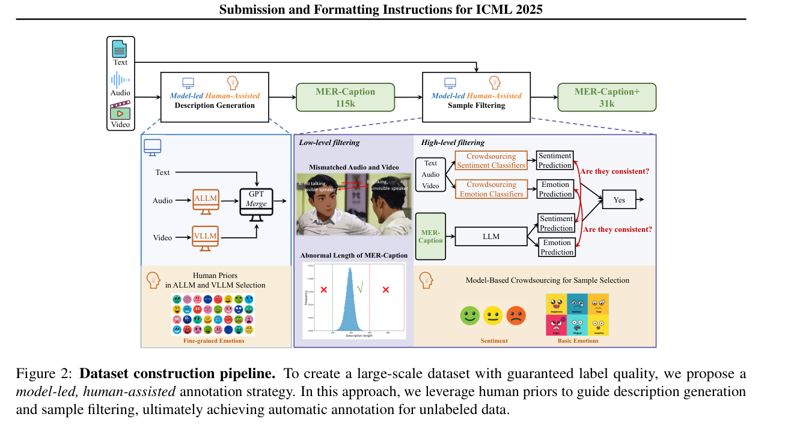
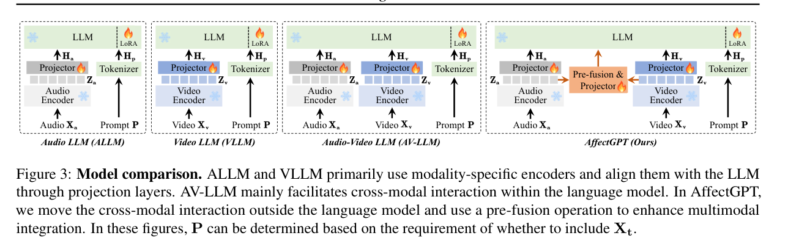

2025 ? ICML
PROBLEM ? MOTIVATION
????
?? MER ????????????????????????????????
????? ?However, the current community suffers from a lack of large-scale datasets with intensive, descriptive emotion annotations, as well as a multimodal-centric framework to maximize the potential of MLLMs for emotion understanding.?
??,??????????????????????????,??????????????????????MLLMs????????
MOTIVATION FIGURE ? VISUAL VERIFIED
??? ? 1 ?

Emotion complexity analysis. Human emotions are often diverse and coexist simultaneously. Such complex emotional states are difficult to describe using discriminative frameworks. However, MLLMs can generate emotional descriptions, offering new possibilities for complex emotion modeling.
????????????????????????????????????????????????????????????????????????????????????????????????????????
APPROACH ? METHOD
????
?? MER-Caption?AffectGPT ? MER-UniBench??????????????
????? ?Utilizing our model-based crowd-sourcing data collection strategy, we construct the largest descriptive emotion dataset to date (by far), featuring over 2K fine-grained emotion categories across 115K samples.?
?????????????????,???????(??)???????????,?115K???????2K?????????
METHOD FIGURE ? VISUAL VERIFIED
??? ? 2 ?

Dataset construction pipeline. To create a large-scale dataset with guaranteed label quality, we propose a model-led, human-assisted annotation strategy.
????????????????????????????????????????????????????????????????????? MER-Caption ? MER-Caption+ ?????????????

Model comparison. ALLM and VLLM primarily use modality-specific encoders and align them with the LLM through projection layers. AV-LLM mainly facilitates cross-modal interaction within the language model. In AffectGPT, we move the cross-modal interaction outside the language model and use a pre-fusion operation to enhance multimodal integration.
??????? LLM??? LLM ?????? LLM???? AffectGPT???????????????????? LLM ?????????????????????????????????????????????LoRA ?????????
GPT ANALYSIS ? LIMITATIONS
????????
???????? ? AnalystInference
?????????????????????????????????????????????????????????????????????????????????????
- ?????
?????????? MER ????????????????????????????????????????????????????????????????????????????????????????????
- ?????????
???????????????????????????????????? ???????????????????????????????????????????????
- ???????
?????????? MER-Caption?AffectGPT ? MER-UniBench?????????????????????????????????????????????????????????????????????????
- ????
??????????????????????????????????????????????????????????????
- ?????
??????????????????????????????????????????????????????????????????
- ????????
????????????????????????????????????????????????????????????
- ???????
???????????????????????????????????????????????????????????????????????